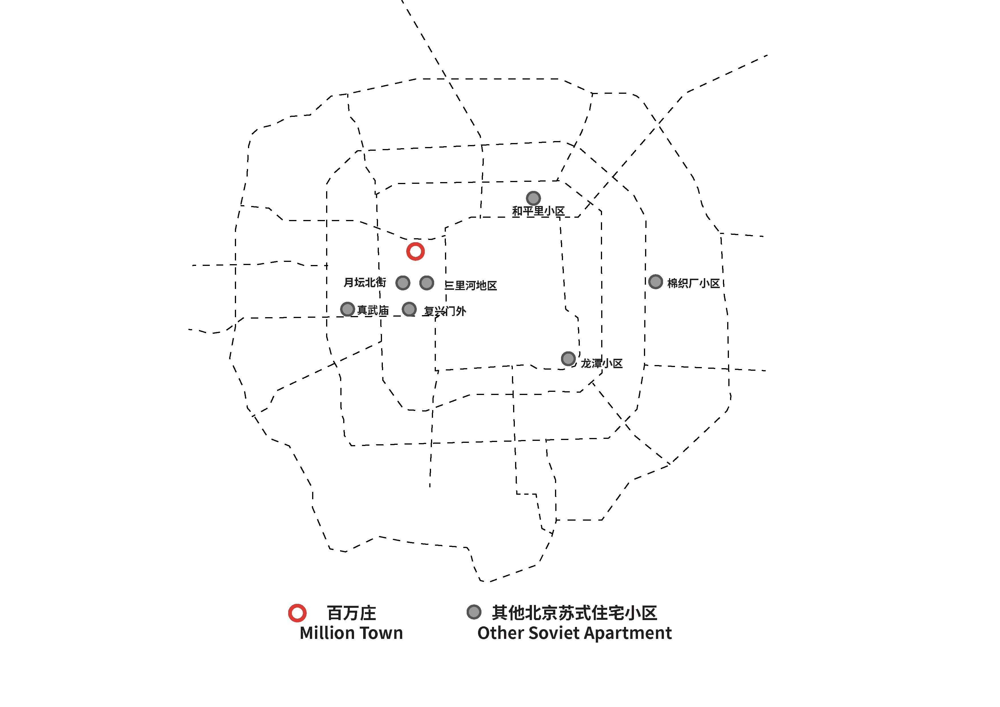

About Baiwanzhaung
Located in the west district of Beijing, Million town is the first ever designed and built community socialhousing in the People’s republic of China in 1953. It once had the highest qualitied apartment units tailored to house intellectuals, with similar education level and family sizes selected by the government from different parts of the country, to come and resident in the capital city for work convenience. This project served as a prototype of communal living that many neighborhoods residence followed to develop, creating residential blocks that had close neighborhood bonds. Nevertheless, as time passes, Million town is currently a near obsolete residential block, that the government considered to demolish and reform but decided to keep due to its historical value. Most residents are elders, renters from other cities and families with children attending the local primary school. The main issue is that the community lacks order and management. Waste, used furniture and building materials are dumped in public areas, some ground level residents even excavated the land for gardening. With no regulation privatizing the limited public space created safety hazards and disturbs the living of other residents.
